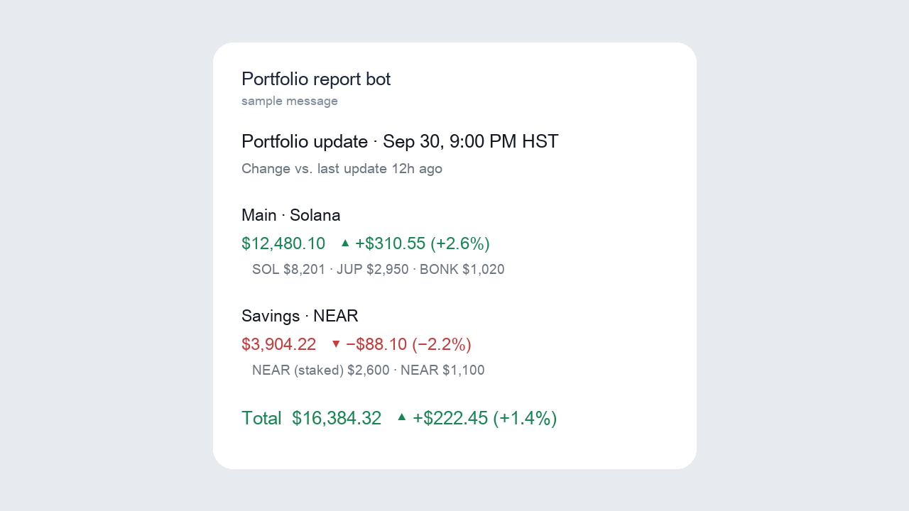

Portfolio Tracker
Portfolio tracking notification system
Runs twice a day on its own, for free, and alerts only on real price spikes
The problem
Checking several crypto wallets on two blockchains means opening multiple apps and adding things up by hand, and junk tokens airdropped into wallets show fake values that make the totals wrong.
What I built
- A scheduled pipeline on GitHub Actions: at 9 am and 9 pm it reads every wallet's balances on Solana and NEAR, prices each holding, and sends a summary to Telegram with the change since the last report.
- A second job every 30 minutes that stays silent unless a holding jumps 25% and gains $250 within an hour, with a cooldown so one move isn't reported repeatedly.
- Junk filtering: tokens with almost no trading liquidity, or worth more than their whole trading pool, are left out of the totals.
- Secrets (bot token, wallet list) live in GitHub's encrypted secrets, never in the code; previous values are cached, never committed.

How I know it works
- In daily use since September 2026.
- If a wallet or price source fails, the report says so and leaves it out of the total instead of failing or sending a wrong number.
- Adding another blockchain is one new file, following the same pattern as the first two.
Results
- Runs on GitHub's free tier, with no computer left on.
What I'd do next
- Automated tests with recorded sample data.
- Include positions held inside lending and liquidity apps, not just wallet balances.
Tools: Python · GitHub Actions · Telegram API